执行摘要
AI 行业正处在一场规模空前、节奏不均的扩张之中。理解这场扩张，需要一个贯穿三主线的统摄性框架：**需求是真实的，但行业仍处早期；而资本投入的速度，跑在了技术落地的速度前面，技术落地的速度，又跑在了人类社会采纳的速度前面。** 这个"三层速度差"既是机会的来源，也是错配与风险的根源。更深层地，如果 AI 的终局是如同水电一般的全人类基础设施——那么当前基于"高科技垄断高利润"假设的估值模型，本身就在积累中长期的系统性风险。本报告把三层速度差作为中短期风险，把估值范式的可能转变作为中长期风险，分层揭示。
2025→2026（+68%）
AI 增量同比增速
应用层营收缺口
全企业规模化
应用场景已走出聊天机器人阶段。编程是第一个被商业化验证的"现金牛"——Cursor 与 Claude Code 在 2025 年下半年双双冲过年化收入 10 亿美元。但更值得关注的是 2026 年 Work 市场是否进入"加速前夜"。证据是混合的：Palantir 美国商业收入连续多季三位数增长、Salesforce 的 AI ARR 以 +120% 增速破 10 亿美元——AI 增量确实在爆发；但微软 Copilot 付费席位约 1500–2000 万（远低于 4000 万预期）、RAND 显示 80% AI 项目失败——**"AI 强、大盘弱"的分化**说明 Work 渗透仍处早期，且注定是伴随往复的长期过程。
竞争态势远未到"固化"的程度。基础层（大模型 + 算力）领先优势相对清晰，但规模最大的 Work 市场竞争才刚开始，谁吃下最大蛋糕为时尚早。五股势力正在角力：向 Work 入口延伸的模型巨头（Codex 用于编程之外、Anthropic Cowork）；守阵地的传统办公巨头；崛起的 AI 原生 SaaS（Notion）；出海的中国办公云（飞书/钉钉）；以及连接模型与业务流程的集成商（Palantir AIP）。在"入口/模型/云/平台/定制"几层里，谁能捕获最多价值仍高度不确定。
资本市场是风险最集中之处，且多维度叠加。资金缺口 6–10 倍；算力呈"分层过剩 + 结构性短缺"（旧代 H100 跌 70%、中小 GPU 云利用率 <60% 已过剩，而 Rubin/HBM4 级旗舰推理算力仍结构性短缺）；资金面 Hyperscaler 主要靠经营现金流（与电信泡沫的区别）但 capex 增速已超现金流增速，巨型 IPO 2026 集中释放，日本央行加息边际抬高融资成本。
核心论点：中短期，三层速度差（资本 > 技术 > 社会采纳）造成的投入—回收时间错配，是主要风险，2026–2027 是验证窗口。中长期，若梁文峰"AI 是全人类基础设施"的愿景在开源力量推动下成真，整个产业的估值模型将从"高科技高毛利"滑向"公共事业低毛利"——这是比时间错配更根本的系统性风险。两层风险相互放大。
应用场景的变迁与展望
1.1 演进脉络：从"能对话"到"能干活"
AI 应用的三年演进，本质上是行业追问的焦点从"模型有多聪明"转向"AI 能不能可靠地完成真实工作"。聊天机器人阶段（2022.11–2023）建立认知但难变现；多模态阶段（2024）让 AI 从文本工具变成内容生产力；Agent 阶段（2025–2026）是最关键的范式跃迁——推理模型（o1/o3、DeepSeek R1）赋予长程思维链，工具调用让模型能操作外部系统，Agent 框架（LangGraph/CrewAI/Agents SDK）让多步任务工程化。这三块拼图合力，让 Agent 从论文走向生产，催生了编程这一首个大规模变现场景。
阶段判断
到 2026 年中，行业共识已彻底从"模型对话能力有多强"转向"Agent 能否可靠完成真实工作任务"。这不是用词的变化，而是商业逻辑的跃迁——对话按字数计价，工作按产出计价，后者的天花板高出一个数量级。应用演进时间轴
1.2 当前主战场：Coding 的大规模应用与验证
编程是迄今商业化最快的 AI 应用。Cursor 的 ARR 一年内从约 2 亿增至超 10 亿美元（5 倍），估值升至 293 亿美元；Claude Code 发布仅约 6 个月即达年化收入 10 亿美元。编程验证了一个可复制的范式：当 Agent 能在标准化、可验证、反馈闭环明确的工作流中落地时，商业化会非常快——这正是它对 Work 市场的预言价值。
关于生产力收益，厂商数据高度一致地指向显著提升（GitHub +55%、Cursor +22%、Google DORA +24.9%、JPMorgan +20%、Google 56% 新代码 AI 辅助）。关键变量从来不是"AI 能不能提效"，而是"人愿不愿意、会不会用"——采纳曲线的差异源于使用者的经验与学习投入，而非工具能力上限。真正的瓶颈在组织变革与人的能力匹配（见 1.5）。
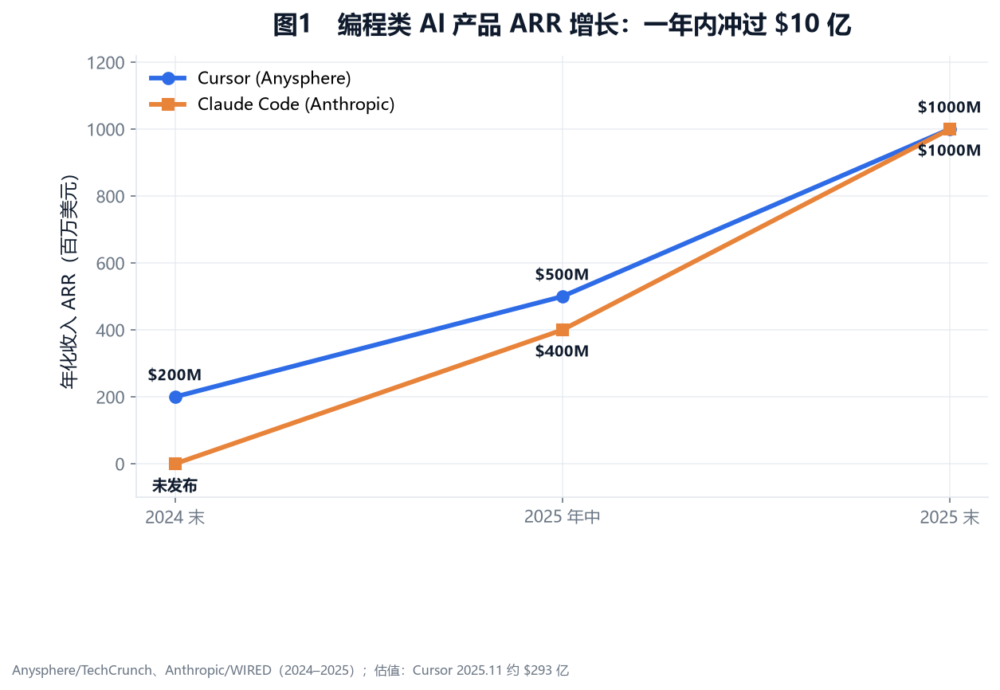
1.3 Work 领域：是加速前夜，还是已加速？
Work（企业级商业应用）是 AI 应用最大的潜在市场。一个尖锐的问题：渗透究竟处在加速前夜，还是近半年已有加速证据？需要把头部 SaaS 的最新季度数据拆开看。
加速的证据：AI 增量在头部厂商中确实爆发
Salesforce 的 Agentforce + Data Cloud 合并 ARR 破 10 亿美元（+120%），但总营收增速仍仅 8%——"AI 强、大盘弱"分化明显。Palantir 美国商业收入 Q1 +152%、Q2 +178%，美国商业 TCV Q2 同比 +153%、单季签约超 20 亿美元（注：用户曾引用"+6% 客户/+81% TCV"，经核实 +6% 实为全部客户环比，商业客户同比 +42%，+81% 无匹配口径，疑为误引）。Palantir 大单爆发说明大公司 AI 采用进入新阶段。模型巨头亲自下场做 Work 入口（Codex 100 万人用于编程之外、Anthropic Cowork 90%+ 用例非编程）本身也是加速信号。
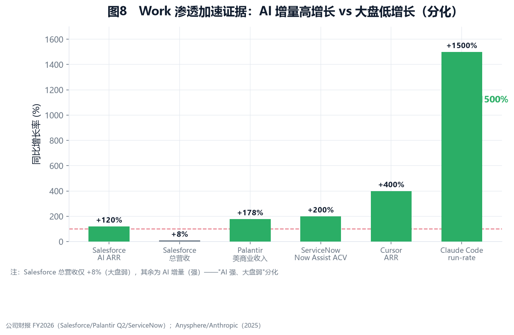
减速的证据：规模化远未到齐
微软 M365 Copilot 付费席位约 1500–2000 万，远低于 4000 万预期，Gartner 显示仅 6% 组织完成试点规模化、57% 参与度下滑。多家机构惊人一致地指向同一鸿沟：Gartner 预测 30% GenAI 项目 PoC 后被放弃、60% 因数据未就绪失败；RAND 显示 80% AI 项目失败；McKinsey 仅 20–30% 企业把 AI 嵌入核心业务。88% 试验 vs 7% 规模化——这是 Work 市场最大的结构性现实。
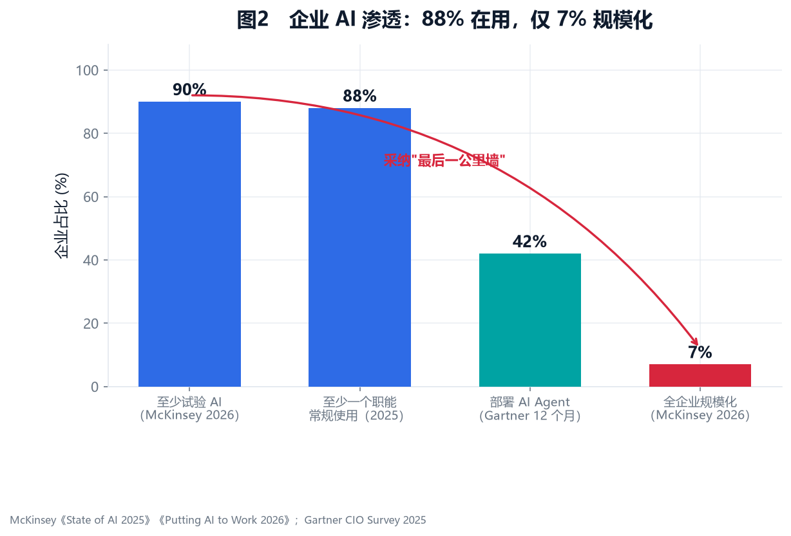
综合研判：加速前夜已过、加速初期已至，但非线性
Work 渗透处于"加速初期"，但高度分化、注定伴随往复。它不会是平滑 S 曲线，更可能呈波浪式——每波技术进步推升渗透，组织阻力与 ROI 证伪形成回撤。Gartner 预测 2028 年 33% 企业软件含 Agentic AI（2024 不足 1%），但 RPA 的前车之鉴提示路径注定曲折。1.4 专业行业的深入应用
艺术创作：Sora/Midjourney/Runway 在影视/广告规模化采用；Runway ARR 从 7000 万增至超 9000 万美元。医疗：FDA 累计批准 1050+ AI/ML 器械；Insilico AI 设计药物进入 II 期临床。法律：Harvey AI 估值约 50 亿美元，部署于 PwC 约 20 万员工。金融：JPMorgan 科技预算超 170 亿美元，Morgan Stanley 给 1.6 万顾问部署 GPT-4。专业行业壁垒高、变现慢，但一旦突破价值极高且黏性强。
1.5 渗透的过程性与阻力：为什么"最后一公里"最慢
最难的从来不是 AI 的能力，而是让组织真正用起来。阻力来自多个叠加层面：①组织架构与工作流的巨变——让 AI 发挥效能需重新设计工作流而非"贴补丁"，涉及部门利益与 KPI 重构；②人员知识能力的匹配——AI 工具效用高度依赖使用者能力，渗透速度受限于企业"AI 素养"提升（以年计）；③数据治理——Gartner 预测 60% 项目因数据未就绪失败，这是组织治理的欠账；④ROI 兑现滞后——Work 场景 ROI 不像编程可即时量化，验证周期长。历史的警示：云计算、ERP、RPA 的采纳都非平滑 S 曲线，Agentic AI 挑战更复杂，渗透更可能呈波浪式。
1.6 就业影响与社会、政府干预的风险
渗透加速触及社会性议题——如果处理不当，可能成为减缓甚至逆转渗透的最大变量。Challenger/SHRM 数据显示2026.03 AI 首次成为美国裁员首要原因（占 25%）。但 SHRM 的结构性判断相对乐观：20% 岗位有 ≥50% 任务可自动化，但仅 5.1% 高度可自动化且无技术壁垒——岗位重塑 > 消灭，但阵痛真实且会被政治化。各国政府已介入：美国偏"加速采纳+再培训"，欧盟靠 AI Act 监管，韩国/法国已现"AI 解雇"争议。本质是：AI 渗透速度有社会可承受的上限，过度冲击会触发"社会刹车"。
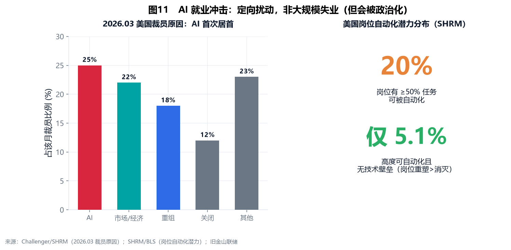
1.7 展望（2026–2028）
演进主线清晰：编程（2025）→ 企业 Work（2026–2027，加速但分化）→ 专业行业纵深（2027–2028）。最值得跟踪的先行指标，不是模型能力提升，而是头部 SaaS 的 AI 增量能否从"高增速小基数"转化为"扭转大盘的增长引擎"——这是 Work 渗透从"前夜"到"黎明"的真正信号。
下一阶段竞争态势分析
2.1 一个需要纠正的判断：竞争远未"固化"
"竞争格局已分层固化"是一个流行但草率的判断——它只描述了 AI 产业的基础层，却让人误以为整个产业竞争都已定型。需要区分两个层次：
基础层（大模型 + 算力）：领先优势相对清晰。前沿模型上 OpenAI、Anthropic、Google DeepMind 构成第一梯队，Meta Llama 占据开源事实标准，xAI 凭算力补位。算力层 capex 门槛（四大云 2025 约 $416B→2026 约 $700B）已把中小玩家挡在门外。这一层"领先者优势明显"成立。
但 Work 市场：竞争才刚刚开始
真正规模最大、价值最高的 Work 市场，竞争远未结束，判断谁吃下最大蛋糕为时尚早。因为 Work 的胜负不取决于"谁的模型最强"，而取决于更复杂的组合：谁拥有工作流入口、谁能把模型深度嵌入业务流程、谁能让企业为 ROI 付费、谁能解决"最后一公里"。这些能力与基础层领先者并不天然重合。至少五股势力正在角力，胜负未定。2.2 势力一：模型巨头的 Work 入口布局
模型公司正经历战略转向：从"卖 API"升级为"抢 Work 入口"。OpenAI Codex 已有 100 万人用于编程之外的知识工作（研究、分析、文档、运营自动化），定位"知识工作执行层"。Anthropic 推出通用职场 Agent Cowork（2026.01 预览→04.09 企业版 GA→07 web/mobile），90%+ 用例在编程之外，企业定价 $20/用户/月，客户含 Thomson Reuters、PayPal、PwC。Google Gemini for Workspace 走"嵌入既有办公"路线。
战略意义：当模型能力趋同、API 价格战压低毛利时，掌握入口意味着掌握用户关系和数据（Stratechery 称"Agents Over Bubbles"）。风险：模型公司擅长技术，但 Work 入口需要企业销售组织与行业 know-how——它们的历史短板。
2.3 势力二：传统办公巨头 Microsoft / Google
Microsoft / Google —— 守阵地与被颠覆的张力
护城河：Microsoft 365 约 4.3 亿付费席位（绝对主导），Workspace 覆盖更广的中小企业与消费市场。装机量难撼动，迁移成本极高。Microsoft 更有"平台+云+模型"捆绑优势。
Gartner 显示仅 6% 组织完成 Copilot 试点到规模化，57% 参与度下滑——把 AI 强行嵌入为非 AI 设计的 Office 工作流，体验难免割裂，给 AI 原生新进入者留下窗口。
2.4 势力三：AI 原生 SaaS（Notion 等）
Notion AI 覆盖 62% 财富 100、约 1 亿用户；Linear（工程协作）、Glean（企业搜索+AI）、Dust 等在细分场景构建 AI 原生工作流。架构优势：无历史包袱，产品从第一天起为 AI 设计，数据模型统一，Agent 能自然跨功能协作。Glean 尤其解决了企业 AI 最痛的"数据未就绪"问题。威胁是边缘性的，但它们的存在迫使巨头认真对待"AI 原生"范式。
2.5 势力四：中国办公云的海外渗透（飞书、钉钉）
飞书（Lark）/钉钉（DingTalk）以"super-app 全栈体验"（IM+文档+会议+审批+HR 一体）进攻，产品功能完整、迭代快、AI 深度嵌入全流程。在出海中企、东南亚、注重性价比的中小企业中有差异化竞争力。但面临三重约束：地缘与数据合规、海外品牌认知弱、本地化支持不足。更可能聚焦特定细分，而非全面挑战 MS/Google 核心市场，但其存在增加了竞争复杂度。
2.6 势力五：Palantir 与咨询集成商
Palantir AIP + 咨询集成商 ——"最后一公里"的修路者
Palantir AIP 通过"Bootcamp"模式高效转化（1000+ 组织参与、200+ 进生产），Q2 美国商业收入 $6.96 亿（+178%），商业 TCV 单季签约超 $20 亿。它做私有环境下的 AI 编排，不与 Cowork/Copilot 正面竞争，而是把企业分散的数据、系统、业务逻辑与 AI 模型连接成决策闭环。Accenture（GenAI 新签累计约 $30 亿）、BCG（AI 业务超 $10 亿）、McKinsey、IBM 构成"交付网络"，完成组织变革、流程重构、人员培训。
关键信号：Palantir 单季 $20 亿 TCV + 咨询商订单爆发，说明大公司 AI 采用从"试点"进入"规模化部署"——大公司举动对行业有示范作用，美国市场动向对全世界有指导意义。
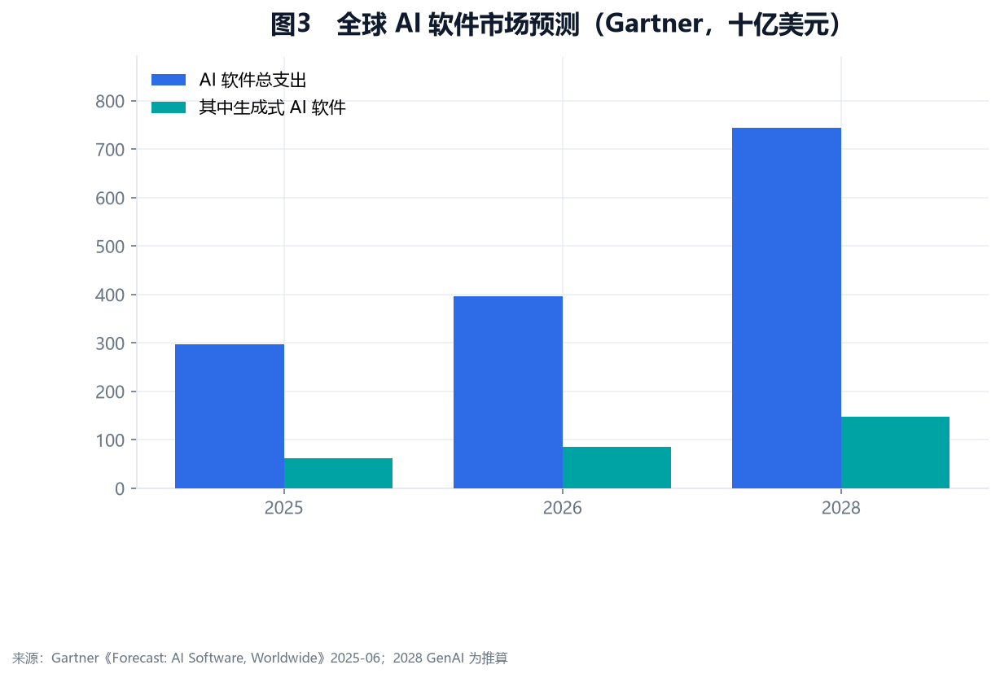
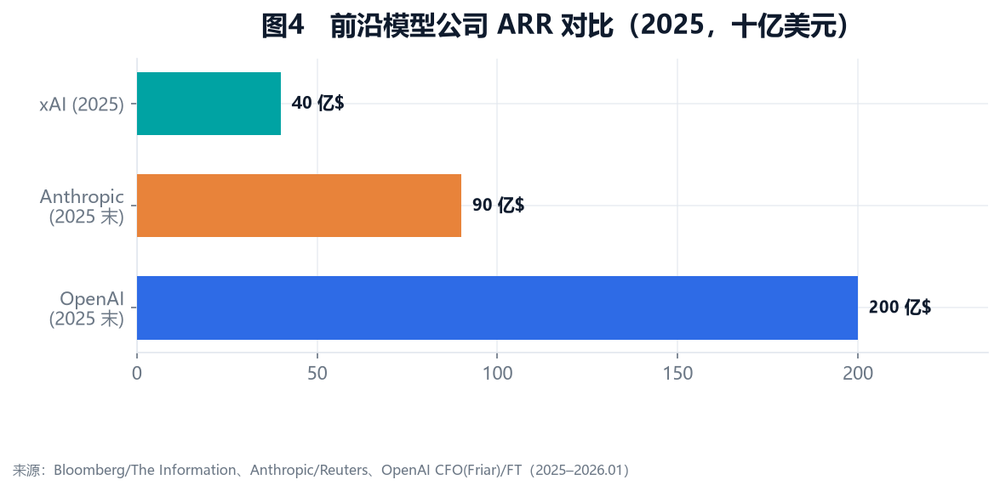
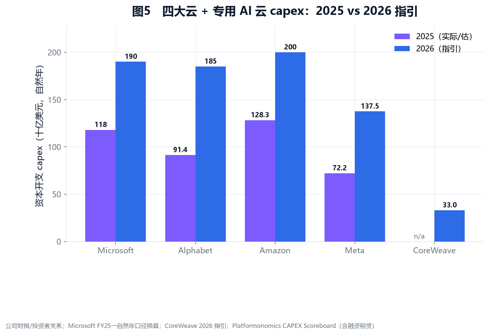
2.7 价值捕获分析：入口、模型、云、平台、定制，谁能赢？
综合 Sequoia"6000 亿缺口"论、Stratechery"入口捕获价值"论与各投行分析，可梳理出分层的价值捕获框架：
- 短期（2026）：确定性在"云 + 既有办公平台"。企业 AI 付费先流向已用的云和办公套件。Hyperscaler 既是房东又是租客（"Hyperscaler tax"），短期几乎稳赚。
- 中期（2027–2028）：胜负手在"Agent 入口"。模型商品化（开源+价格战），入口议价权上升。谁让用户工作流"长在"自己的 Agent 上，谁掌握中期价值高地——Codex/Cowork/Copilot/AIP/Notion 都在争夺。
- 长期：分层经济决定利润分配。芯片/稀缺组件（短期最强毛利）> 专有自研硅 > 既有办公平台 > 应用层（厚者强、薄者弱）> 商品云租赁（最易被价格竞争侵蚀）。
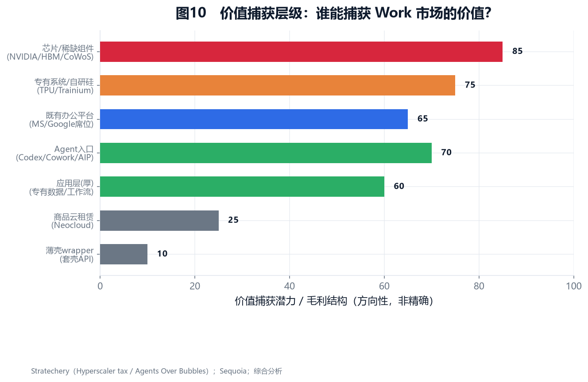
综合研判：没有单一赢家，但一体化者占优
Work 市场不会单一赢家通吃，更可能各层动态博弈。但"模型+入口+云"一体化的玩家（Microsoft、Google、及补齐云/入口的 OpenAI/Anthropic）占结构性优势——能内部化多层价值、避免被某一层"卡脖子"。纯模型公司若无入口与云盟友会被挤压；纯办公平台若无强 Agent 会被蚕食；纯集成商只捕获服务费。能跨越"入口—模型—云—平台—定制"多层、形成闭环的玩家，最可能捕获最大份额——前提是 Work 渗透能跨越"最后一公里"。资本市场分析
3.1 需求是真实的，但行业仍处早期
需求真实：88% 企业在用 AI；OpenAI ARR 从 $60 亿跃升至超 $200 亿；编程一年冲过 $10 亿 ARR——这些是真金白银，不是 PPT 幻觉。但行业仍处早期：①盈利模式未跑通（OpenAI 2025 支出 $340 亿）；②推理成本"降了但涨了"的悖论（token 便宜 80–90%，但 Agent 多步调用让单任务算力消耗爆炸）；③杀手级应用仍在形成；④采纳"最后一公里墙"（88% 试验 vs 7% 规模化）。
3.2 算力供需：不是全局过剩或短缺，而是"分层错配"
用户的核心关切：假设算力按计划落地，相较需求有没有过剩可能？答案不是简单的"是/否"，而需分层、分时间、分结构来看。
需求侧：推理是主导变量
训练算力每年 4–5x 增长（Epoch AI）。但决定算力走向的是推理——推理需求每年约 10x 增长，而推理产能仅约 3x 扩张。Agent 渗透让单用户 token 消耗远超传统聊天。即便训练算力满足，推理算力需求弹性极大。
供给侧：瓶颈不是芯片，是电力
全球数据中心用电 2025 约 485 TWh→2030 约 945 TWh（IEA，近翻倍）。核电合作密集（三里岛 835MW、AWS-Talen、Google-Kairos SMR），燃气轮机订单售罄至 2028。过渡期靠燃气轮机，2030 后靠核电。电力物理约束意味着有钱也变不成即时产能。
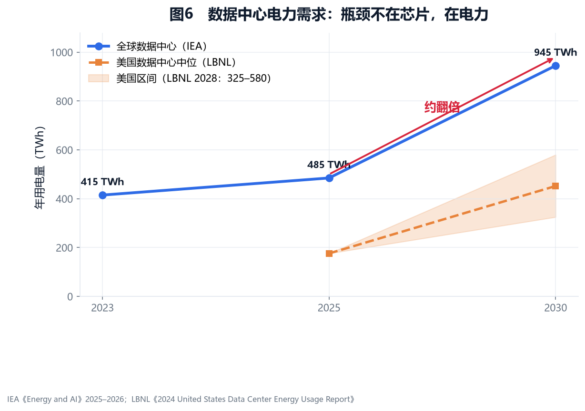
核心研判：分层过剩 + 结构性短缺并存
已经局部过剩（分层过剩）
旧代 Hopper（H100）过剩——租赁价自峰值 $8/hr 跌至 ~$1.5–2，跌幅超 70%；中小 GPU 云过剩——部分 Neocloud 利用率 <60%。消化压力集中在第三方 GPU 云，而非 Hyperscaler 自有产能。仍然结构性短缺
旗舰算力（Blackwell/Rubin/HBM4）短缺——CoWoS-L 与 HBM4 产能限制；推理算力结构性短缺——需求 10x/yr vs 产能 3x/yr（Epoch AI 共识）。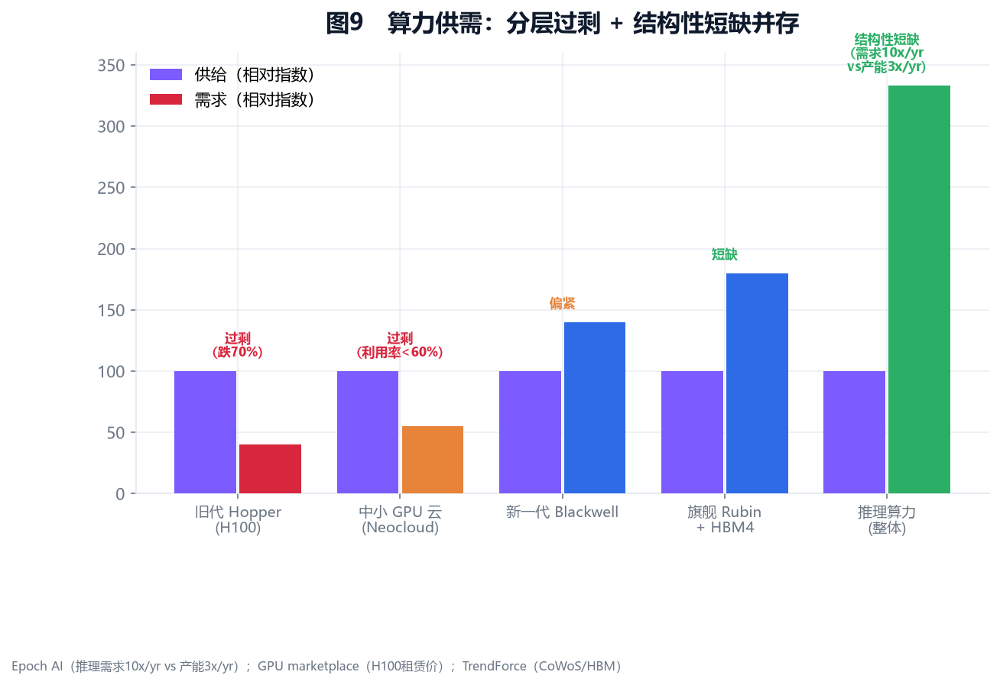
关键分歧：2027–2028 是否转向全面过剩？
短缺论（Epoch AI/SemiAnalysis/Hyperscaler）：推理需求 10x/yr，结构性短缺持续。过剩论（Sequoia"1 万亿问题"/Goldman Sachs）：2027+ 是关键过剩窗口，若应用营收不爆发将现产能消化危机。基准判断（置信度中）：2026 偏紧→2027 转平衡偏松→2028 视营收兑现而分叉。不是"所有 GPU 变沉没资产"的崩盘，而是"回报分化"——高杠杆 Neocloud 与老 H100 持有者最暴露，Hyperscaler 较稳。3.3 资金供给与需求深挖：钱从哪来，会不会断？
Hyperscaler 融资：靠经营现金流，而非发债
与 2000 年电信泡沫的关键区别：四大 Hyperscaler 主要靠经营性现金流融资 capex，发债占比低（Microsoft AAA、Alphabet 现金超 $1000 亿）。但隐忧浮现——capex 增速（约 50%/yr）已超经营现金流增速（约 15–20%/yr），若 AI 收入兑现滞后，发债依赖与杠杆率将抬头。
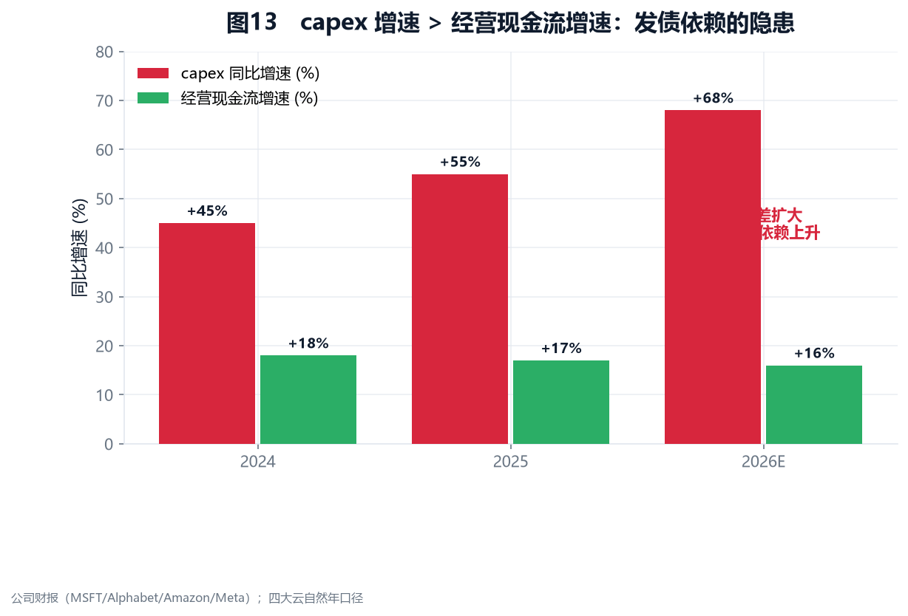
巨型 IPO：2026 集中释放的资金压力
CoreWeave（2025.3 IPO，首日破发）、Klarna 已上市。待上市巨型管线：OpenAI（私募估值约 $5000 亿，若 IPO 可能募资超 $1000 亿）、Databricks（~$620 亿）、Anthropic（~$600 亿+）、xAI、Stripe（~$700 亿+）。若集中释放，公开市场需消化数百亿至上千亿新股。估值倒挂风险：私募晚期估值若无法被公募承接，将引发"私募→公募估值重置"并向下传导。
传统资金源变迁：日本回流与全球流动性
日本资金是全球资本重要供给方。两个因素边际改变其海外配置：①BoJ 货币正常化（2025.12 利率升至 ~0.75%，缩表）；②日元套息交易平仓风险（2024.8.5"黑色星期一"已预演）。"回流"是渐进的、配置驱动的，非断崖式——GPIF 战略配置稳定，主要是寿险公司削减对冲外债。但传导链真实存在：BoJ 加息 → 日本资金边际回流 → 全球长端利率上行 → capex 融资成本边际上升。叠加中东主权基金（长期耐心资本但集中于头部）、加拿大养老基金（偏好数据中心基础设施），资金供给侧整体充裕但边际成本上升、结构分化。尾部风险：若 BoJ 加息快于预期，流动性收缩冲击 AI 高估值资产。
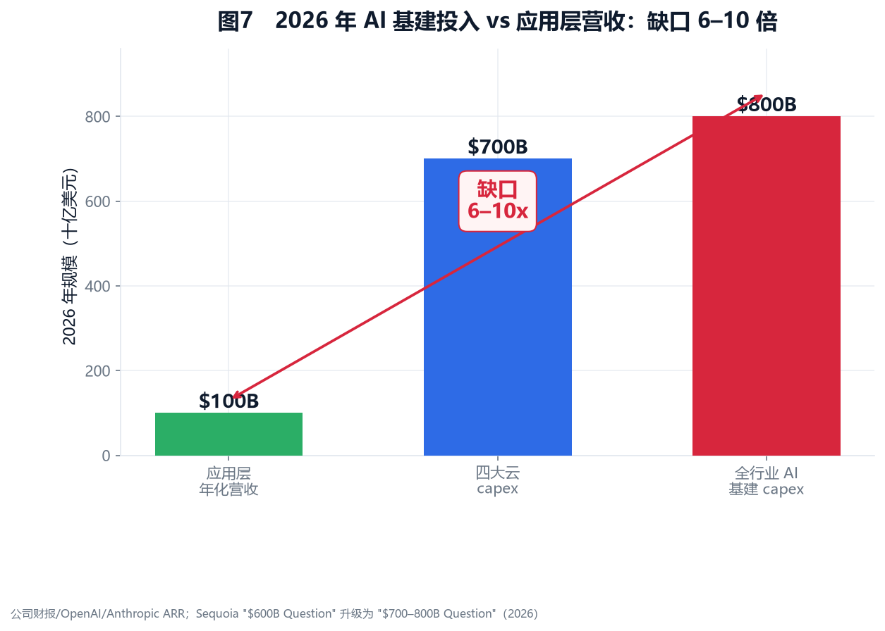
3.4 错配规模的量化
| 错配类型 | 表现 | 规模估计 | 置信度 |
|---|---|---|---|
| 算力时间错配 | 2026 偏紧、2027 局部过剩、2028 分叉 | H100 跌 70%；旗舰仍短缺 | 中-高 |
| 算力结构错配 | 训练 vs 推理、旗舰 vs 旧代 | 推理需求 10x/yr vs 产能 3x/yr | 中-高 |
| 投入—回收错配 | capex $700–800B vs 营收 $80–120B | 缺口 6–10x | 中 |
| 估值错配 | 私募晚期估值 vs 公募承接 | OpenAI ~$500B 私募 | 中 |
| 采纳速度错配 | 88% 试验 vs 7% 规模化 | "最后一公里墙" | 高 |
| 资金结构错配 | 头部融资充裕、中尾部变难 | 中早期估值中位数回落 | 中 |
3.5 终极风险：从"三层速度差"到"估值范式的转变"
中短期风险：三层速度差造成的时间错配
最快
次之
最慢
剪刀差越大，断链风险越高。2026–2027 是验证"预支逻辑"能否成立的关键窗口。
中长期风险：AI"基础设施化"对估值范式的颠覆
据公开媒体报道，DeepSeek 创始人梁文峰阐述了一个清晰理念：AI 不应由少数公司垄断，应像水电一样成为普惠基础设施。DeepSeek 践行这一理念——开源与自身部署能力相近的模型、以架构效率实现低成本、定价不为利润最大化。这一理念并非 DeepSeek 独有：Meta Llama、阿里 Qwen 共同构成全球开源阵营，结构性压低闭源 API 价格。
如果这个愿景成真，估值模型会怎样变？当前 AI 估值隐含"高科技=高毛利=高增长=高估值"假设。但若 AI 逐步"基础设施化"——模型商品化、算力公共事业化——估值将从"高科技高毛利"滑向"公共事业低毛利"。这不需要"AI 杀死资本主义"的宏大叙事，温和但致命的版本是：模型层商品化、算力层公共事业化，只有入口与应用层保持高毛利。今天估值最乐观的基建层与模型层公司，面临最大重估压力。
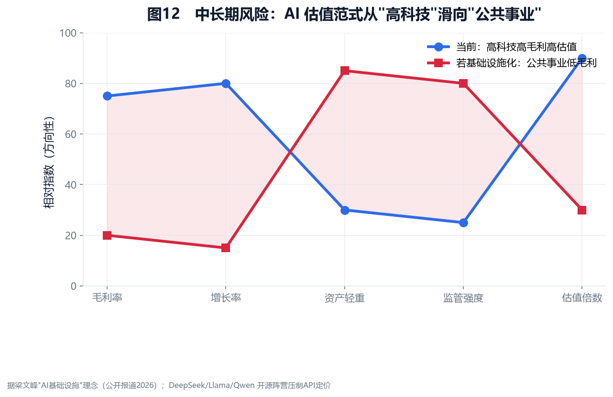
两层风险的叠加效应（最大系统性尾部风险）
中短期"时间错配"（capex 过度预支）若导致 2027–2028 算力过剩与营收证伪，会加速模型与算力商品化，把"中长期估值范式转变"提前触发。反过来，若市场提前 price in"基础设施化"，中短期融资环境会更快收紧。这两层风险的正反馈，是 AI 资本市场最大的系统性尾部风险。但有缓和力量：价值正向"入口+应用+数据"转移，前沿能力仍稀缺，监管可能巩固 incumbent——所以更准确的判断是"价值向少数能跨越多层、形成闭环的玩家集中，而纯基建/纯模型玩家面临最大重估压力"。综合判断与情景推演
AI 行业的需求是真实的、巨大的，正从编程向企业 Work 和专业行业纵深推进。但扩张节奏极度不均，呈现清晰的"三层速度差"：资本以创纪录速度涌入，技术投产受电力等物理瓶颈以年推进，社会采纳卡在"最后一公里墙"（7% 规模化）。竞争上，基础层领先清晰但 Work 市场五势力混战未定。资本市场风险最集中：算力"分层过剩+结构性短缺"并存，资金缺口 6–10x，且面临 IPO 集中释放、日本资金回流等边际压力。更深层，若 AI 走向"基础设施化"，估值范式面临中长期系统性重估。
情景推演（2026–2028）
基准情景
Work/编程规模化兑现，ROI 中性偏正。应用营收 2028 ~$300–400 亿；算力 2027 转松、2028 紧平衡；估值高位震荡、分化加剧。价值向入口与应用层集中。
乐观情景
杀手级 Agent/专业行业突破，ROI 强正。应用营收 2028 >$500 亿；算力持续紧；估值再上台阶。
悲观情景
ROI 证伪 + 估值范式转变预期 + 融资收紧。应用营收 2028 <$200 亿；算力 2027 过剩明显；估值大幅回调，基建/模型层重估，中短期与中长期风险正反馈。
关键观察指标
- 头部 SaaS 的 AI 增量能否扭转大盘增速——Work 渗透从"前夜"到"黎明"的真正信号
- Palantir 等大客户大单的持续性——大公司 AI 采用的领先指标
- OpenAI/Anthropic 季度 ARR 增速与盈利路径——应用层营收兑现与模型层盈利能力
- GPU 租赁价格走势（H200/Blackwell）——算力过剩/短缺的实时温度计
- 巨型 IPO（OpenAI 等）的估值与节奏——私募→公募估值重置风险
- 核电/电力审批进度——算力供给物理上限
- BoJ 货币政策与套息交易——全球流动性尾部风险
- "DeepSeek 时刻"式效率冲击 + 开源对 API 价格压制——估值范式转变的催化剂
给决策者的三点启示
应用层：编程已验证，企业 Work 是 2026–2027 主战场，但务必用独立验证评估 ROI；采纳"最后一公里墙"是最大约束，赢家是能解决组织变革与数据治理的玩家；关注 Work 入口之争的胜负手。
基础设施层：capex 是护城河也是风险源；算力"分层过剩+结构性短缺"，需对冲旧代过剩与高杠杆风险；电力是真正稀缺资源；警惕中长期"基础设施化"对纯基建/纯模型公司估值范式的重估压力。
资本配置：中短期警惕三层速度差导致的投入—回收缺口（2026–2027 验证窗口）；中长期警惕估值范式从"高科技高毛利"向"公共事业低毛利"的转变；优先关注能跨越"入口—模型—云—平台—定制"多层、形成闭环的玩家。